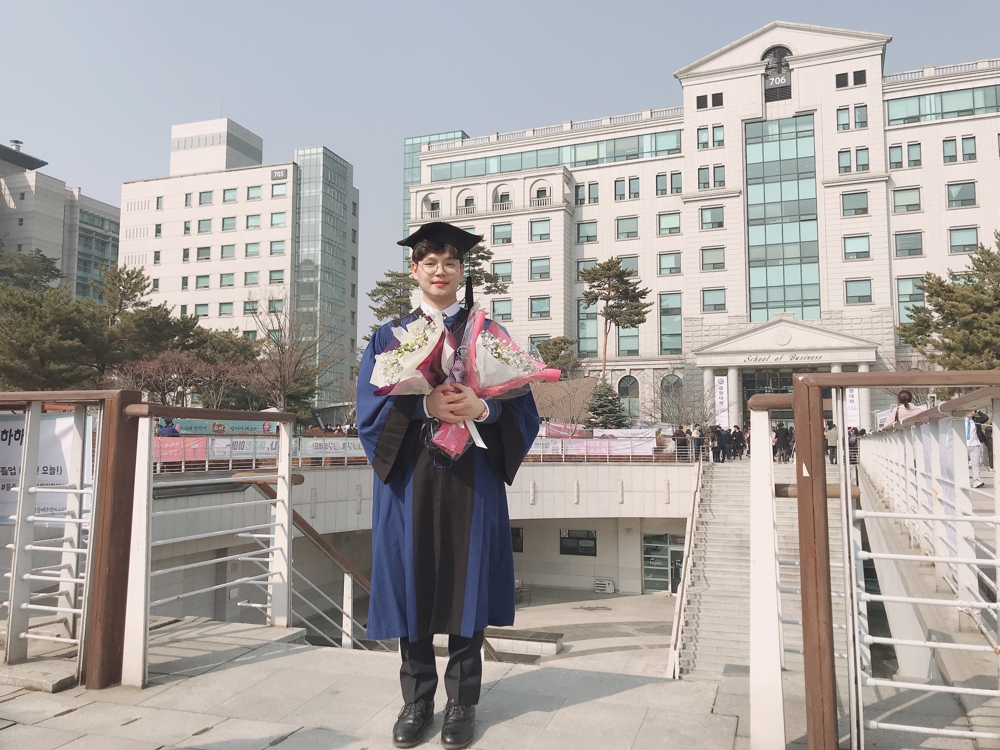

 Undergraduate Graduation ceremony.
I am master student of economics and finance at Hanyang University. My research lies between macroeconomics, labor economics and applied econometrics. I currently work as a research assistant for HyeMi You and ChulSeong Park at Hanyang University. You can learn more on the projects I have contributed to as a research assistant